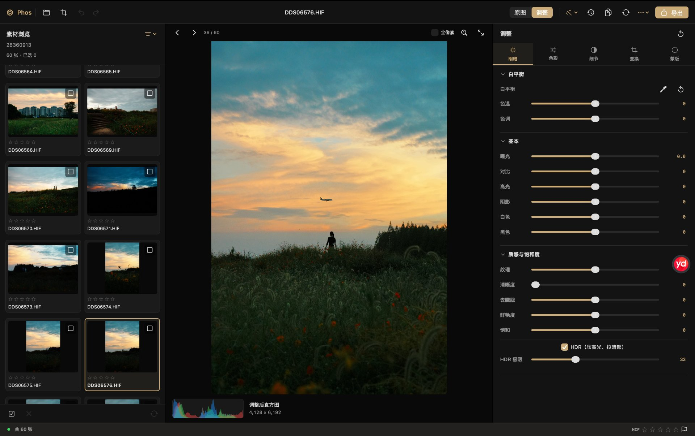
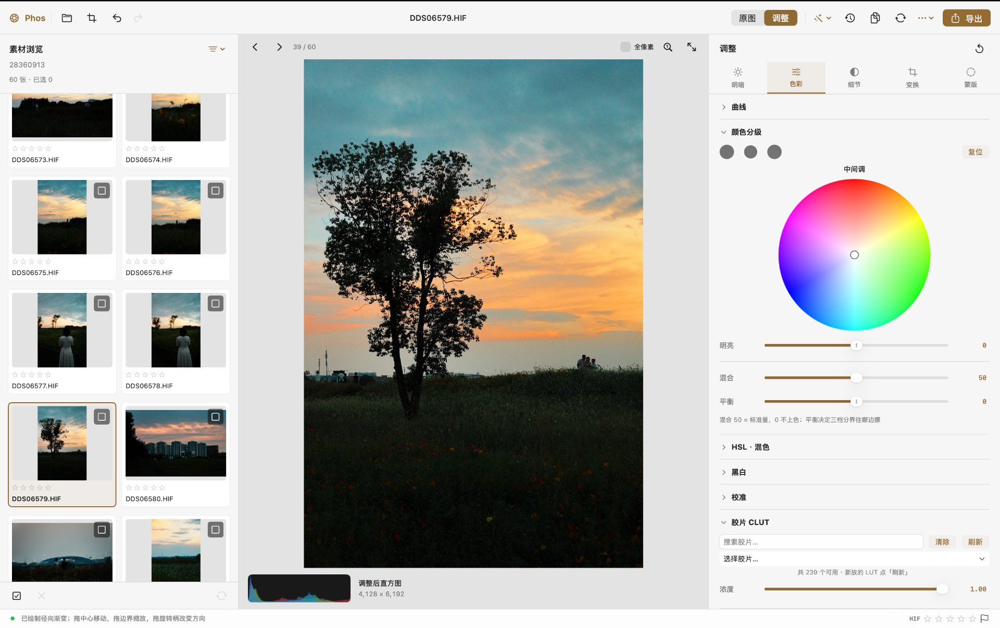
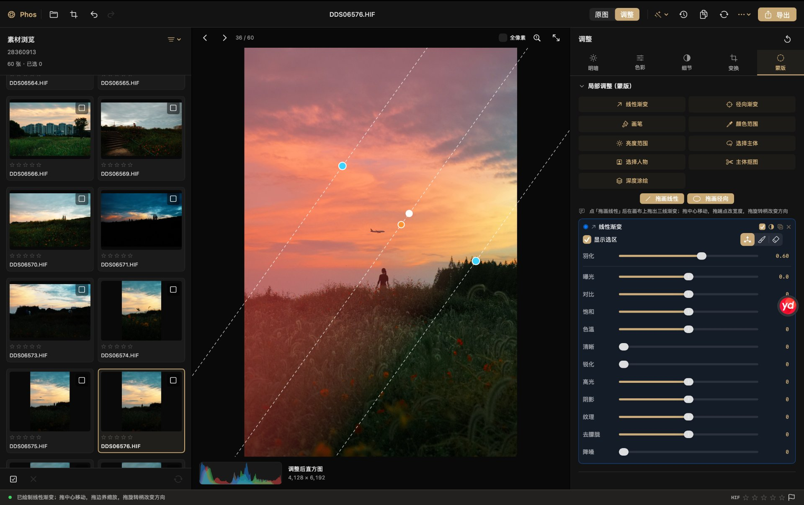
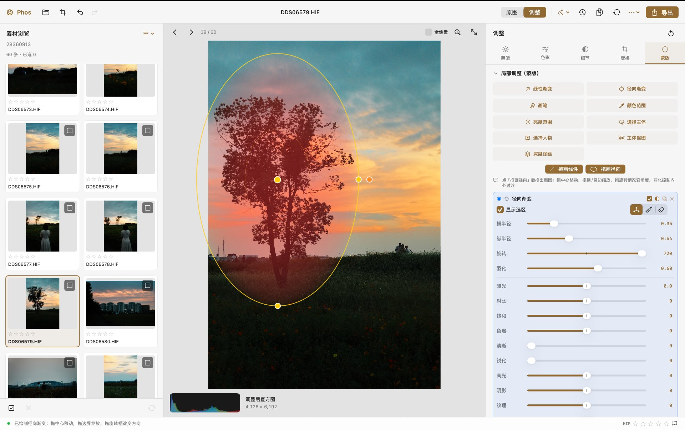
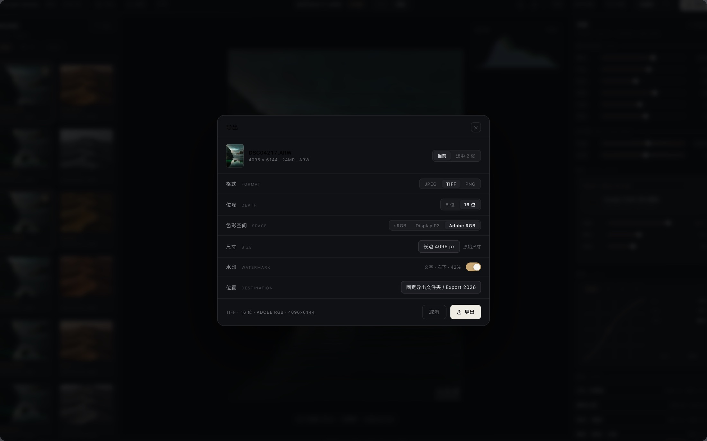
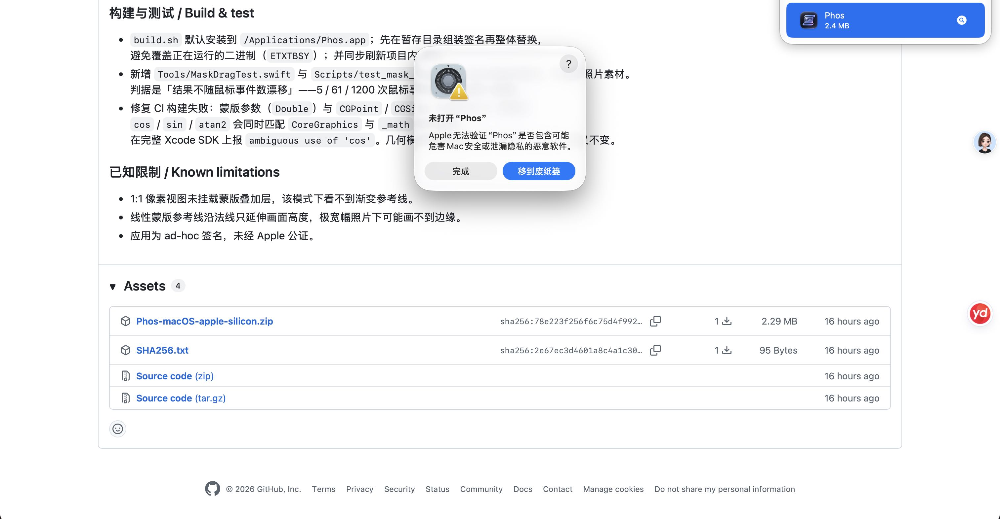
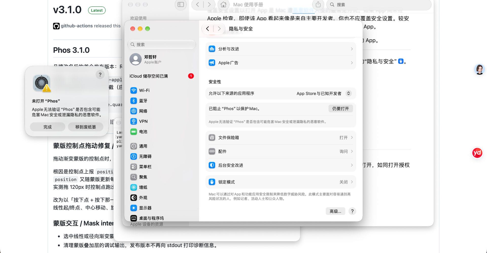

macOS 原生 · Swift · Core Image
Phos
把 RAW 修图做成一件工整的事。
非破坏性 RAW 照片编辑器，为 macOS 而写。所有像素处理都跑在你的 Mac 上，编辑结果写入原图旁的副档，原始文件一个字节都不会被改动。

01试一试
不用下载，先拖两下滑杆。
下面是按 Phos 的渲染顺序做的一个演示：影调、色彩、胶片 CLUT、局部蒙版，参数与真实面板一一对应。滑杆、色调曲线上的圆点、画面上的蒙版控制点，都可以直接拖，画面会实时跟着变。
影调与明暗
直方图
色彩
色调曲线
胶片 CLUT
颗粒与暗角
局部调整（蒙版）
02界面演示
看得见的工作流。
四张真实界面截图，对应 Phos 现有的功能，没有虚构的能力。三栏布局：素材浏览、画布与直方图、检视器。




03设计语言
石墨 × 香槟金。
界面以中性石墨灰面板打底，香槟金只点在「选中」与「编辑态」两处，其余全部克制。工整来自严格网格：固定行高节奏、等宽数字对齐、发丝分隔线。
克制的金色
金色不装饰，只表达状态：选中环、滑杆填充、胶片卡、导出主按钮。看到金色，就是在编辑。
严格网格
26 / 27 / 34 px 固定行高节奏，16 px 统一内边距，数值列右对齐等宽。密度高而不乱。
蒙版可视化
参考线是 1 px 白色虚线，控制点用颜色区分职责：线性渐变端点为青、中心为白、旋转柄为琥珀；径向渐变为黄。看到颜色就知道能拖什么。
04功能
把高频能力做全做透。
不堆砌功能。所有调整写入原图旁的副档，原始文件永不修改，随时可以退回原点。
RAW 解码
ARW / CR3 / NEF 等主流 RAW，另支持 HEIF / HEIC / HIF、JPEG、PNG、TIFF、AVIF。
影调与色彩
曝光、对比、高光、阴影、白色与黑色、纹理 / 清晰度 / 去朦胧、白平衡灰点吸管、HDR；五通道色调曲线、HSL 混色、颜色分级、黑白、校准。
胶片 CLUT 模拟
HALD CLUT 加载，含 Kodak 2383 / 2393 印片模拟，64³ 立方体重采样，强度可调。
局部蒙版
线性与径向渐变、画笔、颜色范围、亮度范围、选择主体、选择人物、主体抠图、深度涂绘，共九种。每个蒙版带独立调整栈，可反转、复制、删除。
批量工作流
多选同步调整、恢复快照、命名预设、命名快照，以及多重曝光合成。
专业导出
8 位与 16 位 TIFF 多色域、长边缩放、文字与图片水印九宫格叠加、固定导出目录。
05安装
四步就能开始修图。
Phos 目前没有做 Apple 公证，所以首次打开需要手动放行一次，之后不会再问。这是 macOS 对所有未公证应用的统一处理，不是 Phos 独有的问题。


下载并解压
点页面上的「下载 macOS 版」按钮，或直接访问 这个直链，下载 Phos-macOS-apple-silicon.zip，双击解压得到 Phos.app。
拖进「应用程序」
把 Phos.app 拖到「应用程序」文件夹。放在别处也能运行，但放进应用程序更方便聚焦搜索与启动台找到。
首次打开时放行
在「应用程序」里右键点击 Phos，选「打开」，再在弹窗里点一次「打开」。之后就能正常双击启动了。
嫌麻烦就用一条命令
在「终端」里执行下面这行，可以直接去掉隔离标记，之后双击即可打开：
xattr -dr com.apple.quarantine /Applications/Phos.app
06开始使用
免费，开源，不联网。
没有账号，没有订阅，没有云端上传。你的照片始终留在自己的 Mac 上。
需要 macOS 15 或更高版本 · Apple 芯片 · MIT 协议 · 当前版本 v3.1.1（2.28 MB）
下载渠道 · 慢就换一个
- 本站直链Cloudflare，推荐
- jsDelivr CDN国内有节点
- jsDelivr 备用节点换线路再试
- GitHub Pages备用
- GitHub Releases需能访问 GitHub
以上是同一个文件，SHA256 完全一致：78e223f2…b1ae6（完整值见 SHA256.txt）。下载后可在终端执行 shasum -a 256 下载的文件.zip 核对。